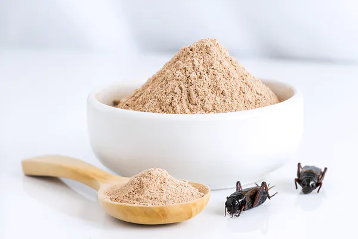

Mąka ze świerszczy może być cennym składnikiem diety
Mąka ze świerszczy może stać się ważnym elementem zdrowej diety, która dba także o środowisko. Dostarcza dużo białka i innych cennych składników odżywczych, nieźle smakuje, a jej wyprodukowanie wiąże się ze znacznie mniejszym kosztem środowiskowym niż hodowla zwierząt na mięso. Z dodatkiem mąki ze świerszczy można przygotować wiele potraw lub dodawać ją np. do koktajli..